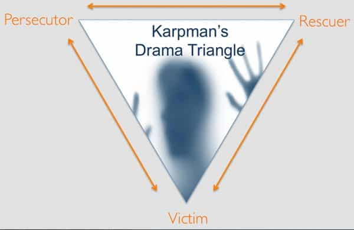
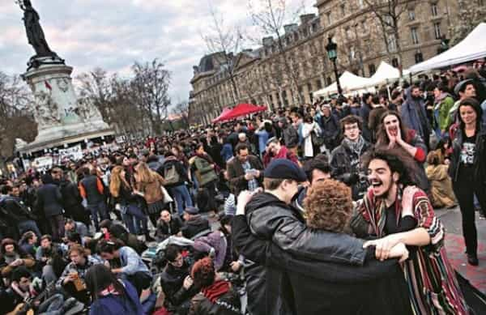
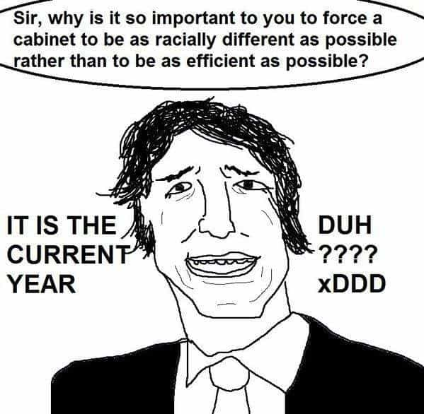
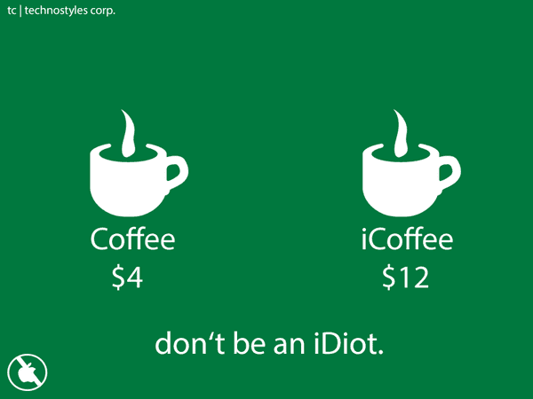

André is a young European who left his decaying country in 2012 for greener pastures. He enjoys exploring subterranean places, reading about a host of interconnected topics, and yearns for Tradition.


Last week, building on the critical work of Lucien Cerise—a Ph.D and expert in cognitive sciences and transhumanism—I outlined broadly how the occult elite had proceeded to “change” how people think and act over decades. The elite’s project is a kind of giant, society-scale neurolinguistic reprogramming. It is a demiurgic attempt to destroy and recreate, to make everything and everyone artificial.
No more men and women, but multi-addicted abstract individuals pretending to decide their “gender” overnight; no more wholesome foods, but Monsanto-grown frankenfoods; and so on. To change a multi-secular, satisfying status quo, the elite took up various roles, chose various scapegoats to take the blame when necessary, impaired our innate ability to discriminate and hierarchize, blurred the difference between truth and fiction. And this was only the beginning.
All these indeed are preparatory steps to make people more plastic. Obviously, a system—as they say in cybernetics—which is unbalanced, contradictions-ridden, and wishing for external help is easier to change than a stable, healthy, and autonomous one. Now, in line with last piece, we cut deeper into how exactly our neo-hermetists did that.
One of our in-built subconscious categorizations works along the lines of:
Common sense, social norms, distinctions between relatives and strangers, and personal experience were more than enough for us to know who or what we should do. Prejudice arises when this pattern of thinking becomes too rigid and hampers one’s daily life. Otherwise, this way to categorize people is normal, as long as one can punctually step out from the autopilot and consider someone or something consciously.
The elite took this pattern over by changing its content. For example, people knew intuitively that trannyism was a sign of pathology and degeneracy, but now normies believe trannies are poor innocent victims who should either be considered normal—hence trivial—or pedestaled. Conversely, a wholly new category appeared with modernity: the “far right”, which did not even exist before at best the eighteenth century, became synonymous in the normies’ minds with a “foul beast” people should relentlessly stigmatize and reject without a thought.
Through reframing, promoting contrived narratives, painting Leftist heroes as sympathetic or more humane in contrast with “right-wingers” who are always depicted as stupid or evil, they shaped a whole worldview of new good and bad guys. Keep the old structure intact, change its contents, and you will have changed pretty much everything.

Another in-built triune pattern the System took over is what is commonly referred to as Karpman’s triangle. During an interaction, someone starts to become bossy, overcritical, controlling over someone else. The first takes up the role of the “persecutor”, the second the role of the “victim”, and a third party may come in rescue to the second. These are roles in the sense that they are more like holes or boxes than essential attributes. They can shift, and a purported role might hide something else.
When politics are framed as a wide-scale drama triangle, as it repeatedly happened with the inception of every new “minority” and their “rights”, the average Joe is baited to feel empathy to the purported victim, hatred towards the tormentor, and a desire to be or join the rescuing party. This is part of a polarization strategy, not unlike scandalous tabloid headlines. Of course, the repeated use of the victim-tormentor-savior in politics amounts to reducing a complex, nuanced reality to a very simplistic, Manichean narrative, and can be used to hide contrarian truths.
Behind the mainstream world of appearances, people who play the Biggest Oppressed Victim are also the bossier, most narcissistic, and most disrespectful ones—in a single word, crybullies—while deadbeats struggle to be acknowledged as victims too without even noticing the structure they try to fit in, and white knights see themselves as noble rescuers whereas they are little more than enablers of toxic behaviors.

Ancient myths tell of a paradise world, whether inhabited by Adam and Eve or ancient Golden Age Hyperboreans, that turned divided, scattered, rife with warfare and other woes after a major cataclysm. The Babel tower story follows the same pattern.
These myths still resonate much in human psyche. Modern thinkers such as Jean-Jacques Rousseau and Karl Marx tapped there by inventing a kind of “natural state” or primitive communism inhabited by noble, innocent savages. This utopian world, they told, had been destroyed by the establishment of private property. Thus, what better way to “fix the world” than destroying private property and establishing communism? The same goes with castes, social classes, and even the sexes. If we are different, hence unequal, we can all go along very well as long as there are proper, acknowledged boundaries, protecting territories, prerogatives, and other components of identity.
A strong trend inside the Left is the sheer hatred of these boundaries and differences. Everything should merge! No borders! No limits! One world!
After Communism ignominiously failed, the occult elite changed its strategy. Through new-age, they would promote “empathy” as a means to lose sight of who one is and to make men more vulnerable to emotional blackmailing. They blamed the warring aspect of masculinity, promoted “communication” and “consensus” to browbeat men into pussies and turn females into caricatures of men. Aren’t our ancestors sooooo guilty of oppressing the whole galaxy after all?
People who are too empathetic can confuse their own feelings or beliefs with others’. This is especially true of individuals who ignore how they can be manipulated, either because they are young, or because they spent their time in an artificial urban world gazing at contrived pictures and lack testosterone. They are all too prone to empathize with characters and points of view that are forcefully presented or suggested to them, no matter their genuineness or truthfulness.
Here is a textbook example of a Leftist inventing a whole scenario out of thin air and selective empathy, then pushing it on Twitter. Upon seeing an unknown Muslim woman in mass transit, (((Rachel Jacobs))) invokes Karpman’s triangle and patterns a story where the-white-male-is-an-oppressor, the-muslim-woman-is-a-victim and I-Rachel-Jacobs-or-another-SJW-am-the-fierce-and-noble-savior.
Is Jacobs actually connected to this Muslim woman or fantasizing? Are SJWs retweeting #illridewithyou all merging into a proto-one-world, or individually daydreaming, forgetting their actual hollowness, and twitting with their mental background all conditioned by the media?
Here we have a mixture of the elite’s invasive narcissism and blue pill gullibility. The first project its own ideas upon everything else while the second submits to the point of mentally living inside part of the elite’s mind and ignores the reality around.
German jurist Carl Schmitt unveiled an essential feature of the liberal, modern, “democratic” “humanism” when he noticed its fundamental hypocrisy. At first glance, “humanism” celebrates what all humans share, tolerates differences while allowing to “go beyond” them towards a beautiful and harmonious human brotherhood. But in fact, “humanism” threatens to cannibalize all cultures, nations, and lifestyles. “Humanism” destroys the possibility to life peacefully with different and unequal people and instead evilizes whatever it cannot include. If you aren’t a “humanist”, you aren’t fully human!
Thus, having purportedly destroyed or included differences, which is exactly the same when “including” someone or something means making it another brand, “humanism” or progressivism creates a new otherness. This one is not national or geographic but political. All humans are to be cannibalized into the new unity, but beware of the “far right”, this black sheep that dares to be different!
After their cognition was impaired by an artificial inability to discriminate or hierarchize, normies can have their brain working normally anew when they at least meet anew with the otherness. At least, good and bad guys! God bless Trump for allowing us liberals to feel superior!
Once again, destroy and rebuild: the mind virus of the 60s prevented distinguishing, hierarchizing, imitating, and now normies can do all that again—distinguish between the “good” refugee and the “bad” evil white male, hierarchize between the invaluable suffering of the “micro-agressed” princess and the unworthy beta male, imitate or follow the media-touted “causes.”
Not to forget the typical carrot of “look, we’re gonna have a perfectly nice and beautiful world, we just need to eliminate X before… and Y… and Z…” Just say X is “racist” or Y is “-phobic” and this will be enough. Pavlovian conditioning is that simple.
“Reality is a far right hoax!”
This may seem out of place in the so-called information age. We have Internet, numberless books around, free communication… how could we lack information? Simple: overloaded with new information and stimuli, the typical individual will follow what is put in front of him as “valuable”, “legit” or “the real deal.” Those who follow this lead end up, once again, living inside a closed system and blocking whatever might threaten their shared narrative.
In France I have seen numerous bourgeois bohemians quote the globalists’ Le Monde religiously. Their “reference newspaper” does not inform on reality, it makes it. On the other side of the pond the same upper middle class herding happens with the New York Times. As society disintegrates into antagonistic small groups, the bewildered mass along with the members of the Hive decide to go on sharing the same illusion.
Hence the emphasizing on the source rather than on objective truth—and why, as long as the System’s outlets will repeat such myths as the gender gap, they will keep believing it no matter how debunked it actually is.
Postmodernism went so far as to deny the non-contradiction principle as well as the existence of an objective truth. In the world of fake news or mainstream media, the approved, Hive-belonging outlets are perceived as if they made the truth. Notice how far we went here into make-believe: it is as if truth could be produced or manufactured firsthand, as if everything was a “social construction” subjected to the whims of our demiurgic managers. Race does not exist! Race exists but this is all “social”! White genocide does not exist! White erasure is great!
I have had the same experience with journalists citing each other about my books without the smallest effort to go to my writings—my experience is that most journalists, professional academics, and other in similar phony professions don’t read original sources, but each other, largely because they need to figure out the consensus before making a pronouncement.
— Nassim Taleb, Antifragile, chap.23
Once external information has been blocked, those who share the same illusion tend to sever their remaining links with those who do not. Large family meals, when they lead the typical blue pill to meet with red-pilled relatives, are typically a quagmire of avoidance, sham, passive-aggressiveness or overt conflict. Hair-dyed twentysomethings will resent their grandparents for being –ist or –phobic.
Do you know what kind of movement leads its members to cut all ties from their relatives and past history? Totalitarian, cultish movements do. Under its smooth façade, mainstreamism orders its members not only to follow, but also to convert their friends and relatives—or to otherize, ridicule, and finally reject them. Thus the bubble becomes thicker and its members all the more together alone, everyone more or less sharing the same semblance of reality.

In such a context there is no place for doubt. The very habit of being conditioned day after day numbs the mind. When I started philosophy, I remember that most if not all students tried to find simple, immediate answers to the great philosophical questions, as if doubt was an unbearable state. True, the making of hypotheses may be part of an autonomous make-believe, but handling and weighting them requires more than scrolling down a newsfeed or watching Game of Cucks.
SJWs act as if they were absolutely right because they have no notion of probability or hypothesis. The very idea of weighting alternative versions seems anathema to their “feels.” Instead, what they display is impatience, intolerance to frustration, rigid thinking, it is hidden behind “clever” or “witty” references, hysteria, clownery, or sheer nonsense.

“If you’re a good follower, you will have pussies passes if female, tags for virtue-signaling if female, and Victimhood Points if belonging to a minority. Be transblack, transgender, and openly autistic to apply for the Big Victimhood Tournament!”

As I said last week, target individuals must will the mind virus or an updated version of it. Making them addicted to fashions, fad, and the Next Big Thing fulfills various functions: they are obviously more malleable, more prone to follow the media, eager to fit in the bubble so that their mental universe does not crash, able to spend their money on the next iPhone or whatever.
On a deeper level, neophilia is a key component of what some sociologists dub the “liquid society.” After the pater familias was killed, there are no core values, no stable internal structuration. Opinions are fluid—they will drip from one box to another as long as the transition is smooth. We will have pedophilia shoved down our throats, but not now, for the elite still needs to include polygamy and young teens before they start preying too obviously on children. The mainstream is just that, a stream.
Just wait for a few more steps in “equality” and “inclusiveness”
Just like gender roles, “heteronormativity” was until recently something so obvious and normal it didn’t even need to be put into words. Using the vocabulary of cognitive science, one could say that “heteronormativity” and the rejection of incest are built-in parts of any normal mind. These parts have to be a bit enforced during education. The male child must be separated from his mother and do male activities. He cannot do what he wants, or if he does, he will never grow up.
Borrowing to the overrated Deleuze and Guattari, Cerise uncovers their concept of “anti-oedipus” as meaning the exact opposite of this. If you ban the bans, if limiting the children’s range becomes criminalized, or worse, if you encourage the children to go beyond the limits he should respect, what you get is blurred boundaries, a lack of sense of identity, and a desire to “regress” towards being one with one’s mother.
This one might seem a bit far-fetched. And yet, when we see how incestuous some powerful tribe is, well, perhaps all the clutter we faced last decades in relation to sex is a sign that we live in a world they shaped all too much. This can also be a good sign as it proves that, if they are to pull the strings, they must somehow show themselves and can never maintain a complete invisibility.
Read Next: 8 Ways You Have Been Psychologically Severed Through Harmful Conditioning